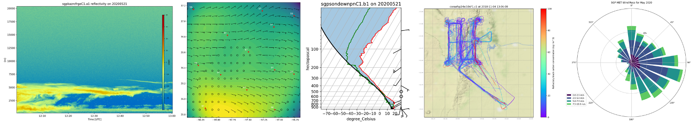

Atmospheric data Community Toolkit Documentation#
Atmospheric Community Toolkit (ACT)#
The Atmospheric data Community Toolkit (ACT) is an open source Python toolkit for working with atmospheric time-series datasets of varying dimensions. The toolkit is meant to have functions for every part of the scientific process; discovery, IO, quality control, corrections, retrievals, visualization, and analysis. It is meant to be a community platform for sharing code with the goal of reducing duplication of effort and better connecting the science community with programs such as the Atmospheric Radiation Measurement (ARM) User Facility. Overarching development goals will be updated on a regular basis as part of the Roadmap .

Please report any issues or feature requests by sumitting an Issue. Additionally, our discussions boards are open for ideas, general discussions or questions, and show and tell!
Dependencies#
Optional Dependencies#
Contributing#
ACT is an open source, community software project. Contributions to the package are welcomed from all users.
The latest source code can be obtained with the command:
git clone https://github.com/ARM-DOE/ACT.git
If you are planning on making changes that you would like included in ACT, forking the repository is highly recommended.
We welcome contributions for all uses of ACT, provided the code can be distributed under the BSD 3-clause license. For more on contributing, see the contributor’s guide.
Testing#
After installation, you can launch the test suite from outside the source directory (you will need to have pytest installed):
$ pytest --mpl --pyargs act
In-place installs can be tested using the pytest command from within the source directory.